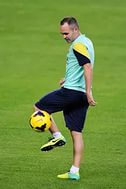
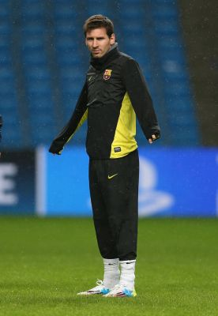

 With Saturday’s win at Málaga now behind them, FC Barcelona have switched their minds to Athletic Club for the third and final time in January, this week for the Copa del Rey quarter final second leg on Wednesday. Luis Enrique gave his players the day off on Sunday, but it was back to work on Monday for a training session on a cold and cloudy morning at the Ciutat Esportiva Joan Gamper. All of the available first team players were in attendance apart from Sergio Busquets and Arda Turan, who have both gone down with a fever. The squad will train at the same time, 11.00am CET, on Tuesday, after which Luis Enrique will be giving a press conference. You’ll be able to listen to it live with simultaneous translation in English here at www.fcbarcelona.com. |
 |
With Saturday’s win at Málaga now behind them, FC Barcelona have switched their minds to Athletic Club for the third and final time in January, this week for the Copa del Rey quarter final second leg on Wednesday. Luis Enrique gave his players the day off on Sunday, but it was back to work on Monday for a training session on a cold and cloudy morning at the Ciutat Esportiva Joan Gamper. All of the available first team players were in attendance apart from Sergio Busquets and Arda Turan, who have both gone down with a fever. The squad will train at the same time, 11.00am CET, on Tuesday, after which Luis Enrique will be giving a press conference. You’ll be able to listen to it live with simultaneous translation in English here at www.fcbarcelona.com. |
With Saturday’s win at Málaga now behind them, FC Barcelona have switched their minds to Athletic Club for the third and final time in January, this week for the Copa del Rey quarter final second leg on Wednesday. Luis Enrique gave his players the day off on Sunday, but it was back to work on Monday for a training session on a cold and cloudy morning at the Ciutat Esportiva Joan Gamper. All of the available first team players were in attendance apart from Sergio Busquets and Arda Turan, who have both gone down with a fever. The squad will train at the same time, 11.00am CET, on Tuesday, after which Luis Enrique will be giving a press conference. You’ll be able to listen to it live with simultaneous translation in English here at www.fcbarcelona.com.
With Saturday’s win at Málaga now behind them, FC Barcelona have switched their minds to Athletic Club for the third and final time in January, this week for the Copa del Rey quarter final second leg on Wednesday. Luis Enrique gave his players the day off on Sunday, but it was back to work on Monday for a training session on a cold and cloudy morning at the Ciutat Esportiva Joan Gamper. All of the available first team players were in attendance apart from Sergio Busquets and Arda Turan, who have both gone down with a fever. The squad will train at the same time, 11.00am CET, on Tuesday, after which Luis Enrique will be giving a press conference. You’ll be able to listen to it live with simultaneous translation in English here at www.fcbarcelona.com.